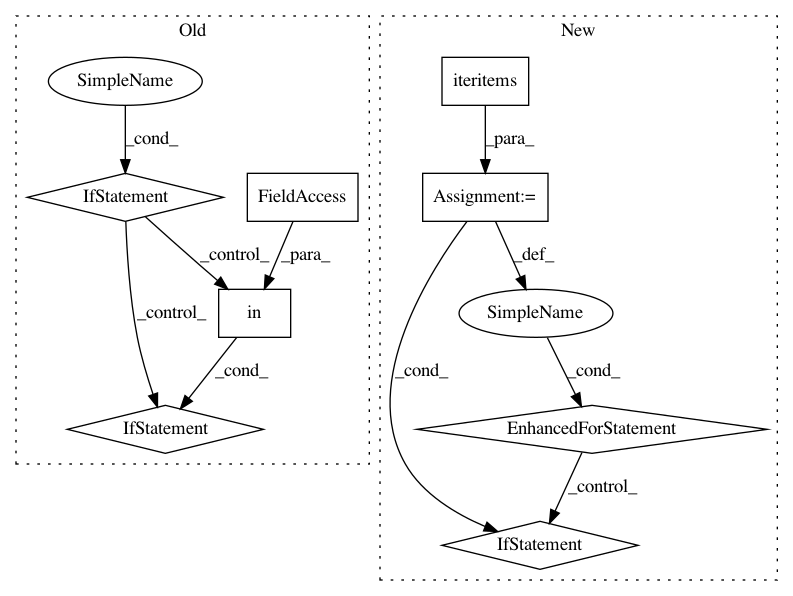

7f007ac656dc5d24606f06544d11dc50748324ef,nilmtk/pipeline/energynode.py,EnergyNode,process,#EnergyNode#Any#Any#,25
Before Change
for ac_type in AC_TYPES:
energy_measurement = Energy(ac_type)
power_measurement = Power(ac_type)
if energy_measurement in df.columns:
energy[ac_type] = df[energy_measurement].sum()
elif power_measurement in df.columns:
energy[ac_type] = _energy_per_power_series(
df[power_measurement])
energy_results.append(df.timeframe, **energy)
df.results[self.name] = energy_results
return df
After Change
df.results = getattr(df, "results", {})
energy = {}
for measurement, series in df.iteritems():
if isinstance(measurement, Power):
_energy = _energy_per_power_series(series)
elif isinstance(measurement, Energy):
if measurement.cumulative:
_energy = series.iloc[-1] - series.iloc[0]
else:
_energy = series.sum()
else:
continue
energy[measurement.ac_type] = _energy
energy_results.append(df.timeframe, energy)
df.results[self.name] = energy_results
return df
In pattern: SUPERPATTERN
Frequency: 3
Non-data size: 8
Instances
Project Name: nilmtk/nilmtk
Commit Name: 7f007ac656dc5d24606f06544d11dc50748324ef
Time: 2014-05-01
Author: jack-list@xlk.org.uk
File Name: nilmtk/pipeline/energynode.py
Class Name: EnergyNode
Method Name: process
Project Name: brian-team/brian2
Commit Name: ee3356fb661d37f06ef09691e8888b97cbcf9209
Time: 2015-03-16
Author: marcel.stimberg@inserm.fr
File Name: brian2/codegen/generators/cpp_generator.py
Class Name: CPPCodeGenerator
Method Name: determine_keywords
Project Name: brian-team/brian2
Commit Name: 1e3b72a859d6943d8135e722bfc9f069932d672a
Time: 2015-11-27
Author: marcel.stimberg@inserm.fr
File Name: brian2/core/functions.py
Class Name: FunctionImplementationContainer
Method Name: __getitem__